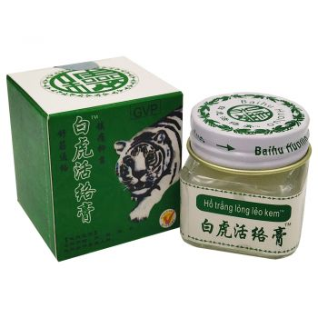
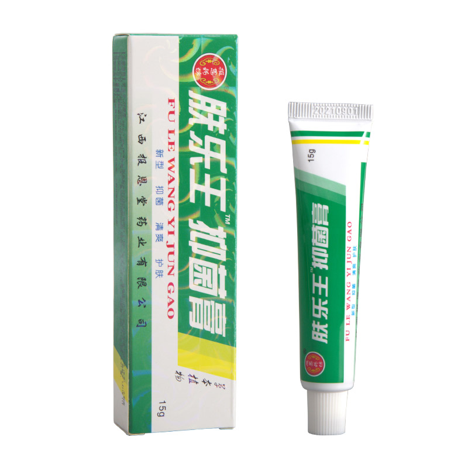
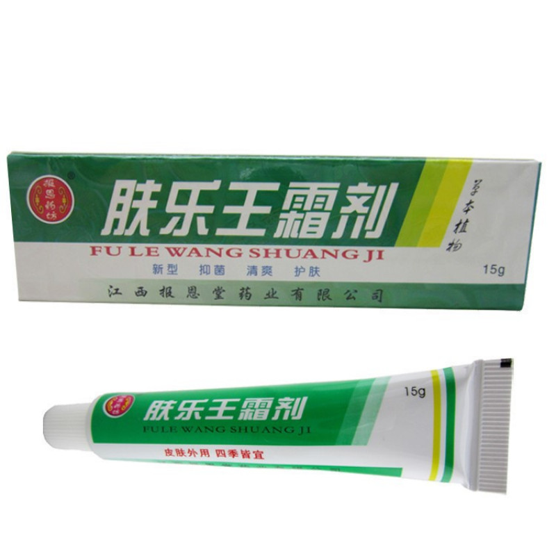
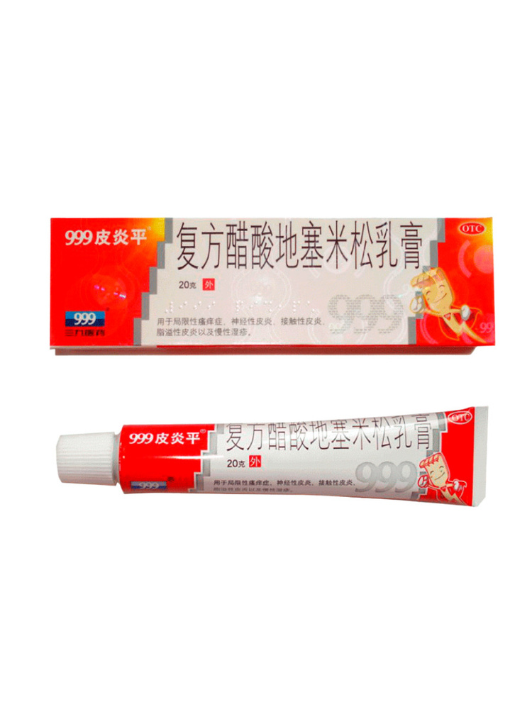

Добро пожаловать на страницу о лечебных китайских мазях!

О лечебных китайских мазях:
Лечебные китайские мази — это средства для наружного применения, обладающие целебными свойствами и используемые для лечения кожных заболеваний, ушибов, синяков и других проблем.
Виды лечебных китайских мазей:
- Мазь с календулой
- Мазь с живокостью
- Мазь с ментолом
Применение лечебных китайских мазей:
Лечебные мази наносятся на кожу в месте проблемы и аккуратно втираются. Они способствуют уменьшению воспаления, облегчению боли и ускоренному заживлению кожи.






Назад